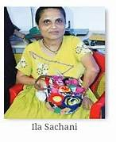

Life of Ila Sanchani: Embroidering a dream: With her feet?!

Ila Sachani is an inspiring example of overcoming adversity and achieving greatness.
Born with a physical disability that affects her hands, she discovered a remarkable talent for embroidery using her feet.
Early Life and Challenges:
Ila Sachani was born in Amreli, Gujarat, India.
Despite being born with a condition that limited the use of her hands, she was determined to live a fulfilling life.
Discovering Her Talent:
Inspired by her mother and grandmother, who were skilled in Kathiawar embroidery, Ila began to learn the art form using her feet.
With incredible dedication and practice, she mastered the intricate techniques of threading needles and creating beautiful patterns.
Overcoming Obstacles:
Ila faced numerous challenges along the way. Threading needles and manipulating fabric with her feet required immense patience and perseverance.
However, her determination and unwavering spirit helped her overcome these obstacles.
Recognition and Success:
Ila's exceptional talent soon gained recognition. Her intricate and beautiful embroidery work was showcased at various exhibitions, earning her admiration and accolades.
She has received numerous awards, including the President's Medal, for her remarkable achievements.
Inspiring Others:
Ila Sachani's story is a testament to the human spirit's ability to overcome challenges and achieve extraordinary things.
She inspires others to believe in themselves and pursue their passions, regardless of any limitations they may face.
Ila Sachani's life is a remarkable example of how talent, determination, and a positive attitude can overcome even the most daunting obstacles.
Her story continues to inspire and uplift people around the world.